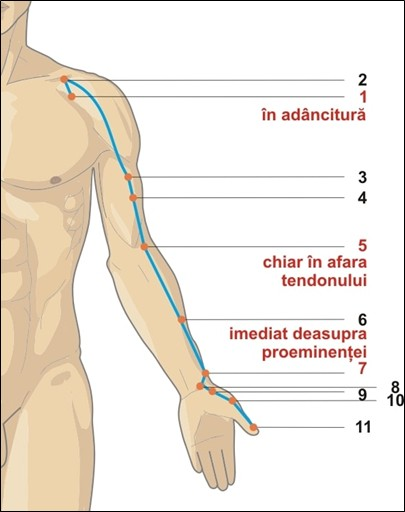

Traseul de suprafață
Meridianul plămân începe în umăr și se extinde în jos pe mână, terminându-se sub unghia degetului mare. Traseul său de suprafață este vizibil și palpabil.

- Începe în regiunea Hollow, lângă partea din față a umărului (LU-1).
- Trece peste umăr și se insinuează în jos pe fața anterioară a brațului de-a lungul frontierei exterioare a mușchiului biceps.
- Ajunge la exteriorul tendonului bicepsului, în pliul cotului (LU-5).
- Continuă în josul antebrațului, ajungând la încheietura mâinii, chiar deasupra bazei degetului mare (LU-9).
- Canalul traversează înălțimea mușchiului degetului mare pentru a termina la colțul unghiei degetului mare (LU-11).
Traseele interne și conexiunile profunde
Traseul meridianului plămân începe adânc în regiunea plexului solar (încălzitorul mijlociu) și coboară pentru a întâlni meridianul intestin gros. Lăsând în urmă stomacul, traversează diafragma, se divide și intră în plămâni. Apoi se re-unește, trece prin centrul traheei la gât și din nou se împarte, suprafață în regiunea Hollow lângă partea din față a umărului (LU-1).
Ling Shu descrie traseele interne ale meridianului plămân astfel: "Meridianul plămân, Tai yin al mâinii, începe de la încălzitorul mijlociu. Coboară și apoi învelește în spirală intestinul gros. Apoi se întoarce și încercuiește intrarea în stomac și pătrunde în plămâni, apoi iese în părțile laterale."
O interpretare a acestui traseu indică faptul că punctul de pornire ar fi la CV-12 (mijlocul stomacului), de unde traseul se duce către intestinul gros (înfășurându-l în spirală), apoi se întoarce către stomac, intră în plămâni, traversează bronhiile și traheea și iese la suprafață la LU-1.